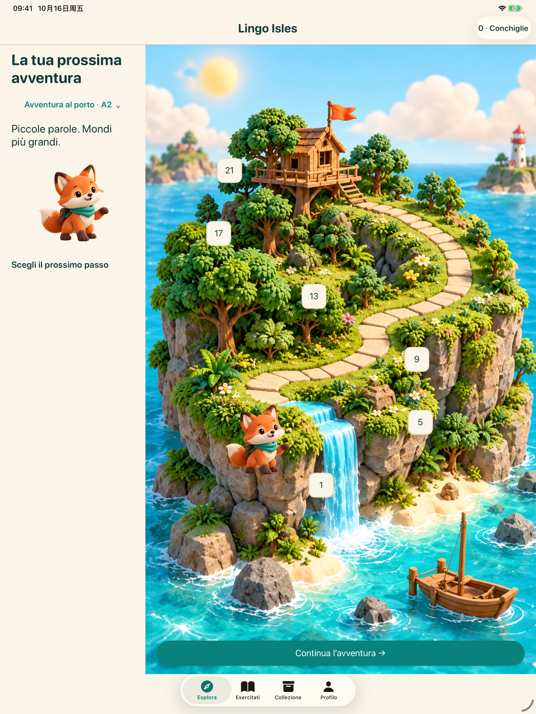
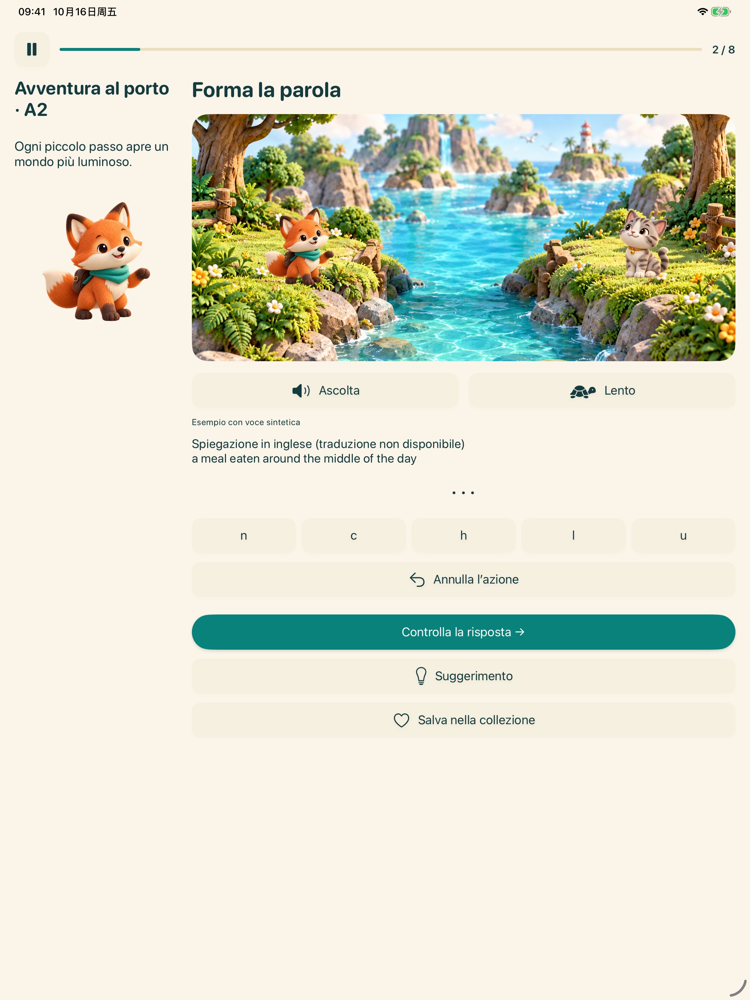
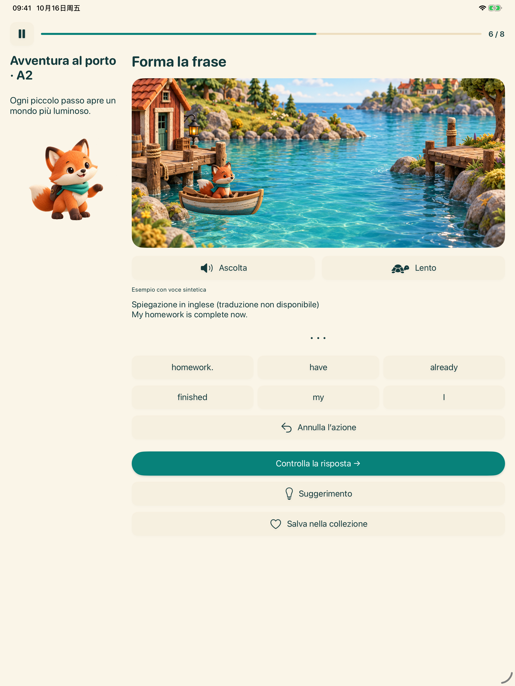
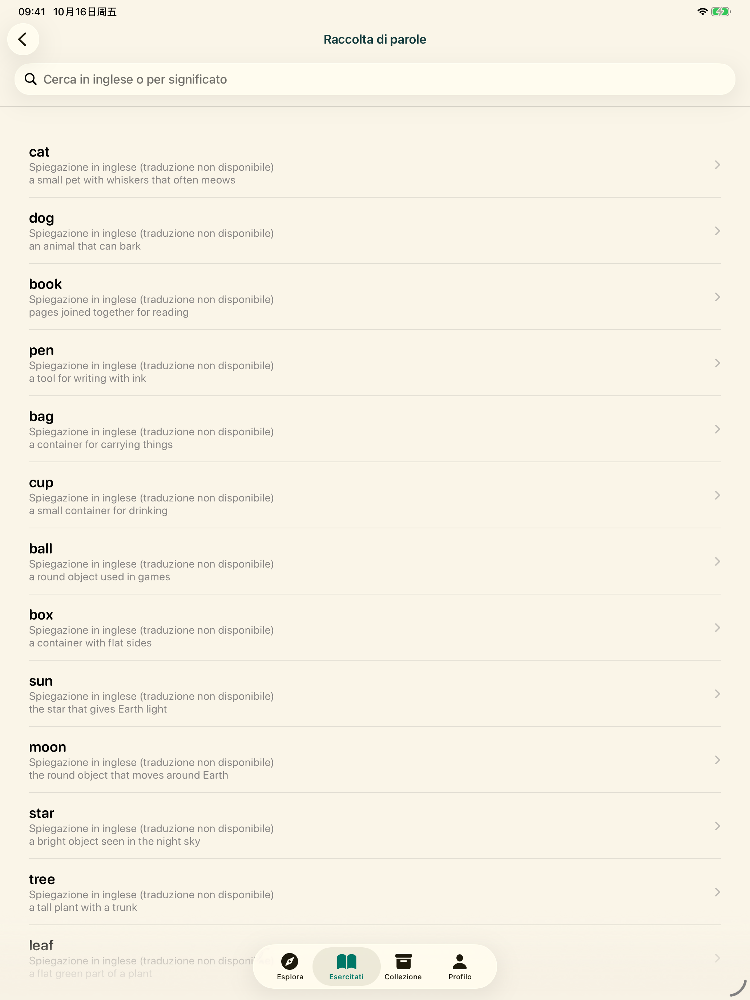

Le isole, da vicino
Schermate dell’app nella lingua dell’interfaccia selezionata. La lingua di apprendimento è l’inglese.
iPhone


iPad








Schermate dell’app nella lingua dell’interfaccia selezionata. La lingua di apprendimento è l’inglese.



